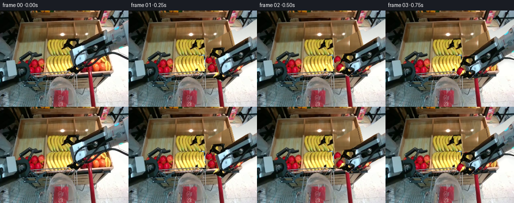
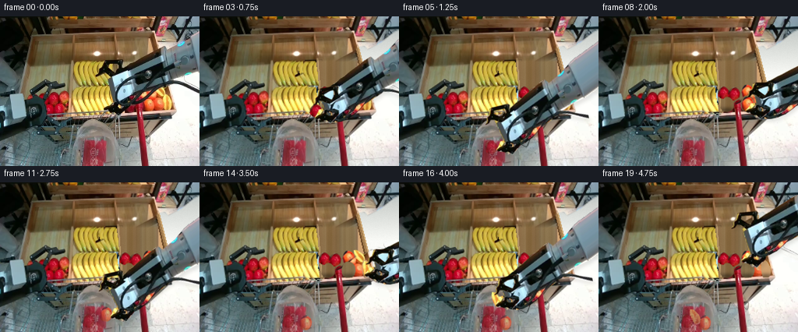
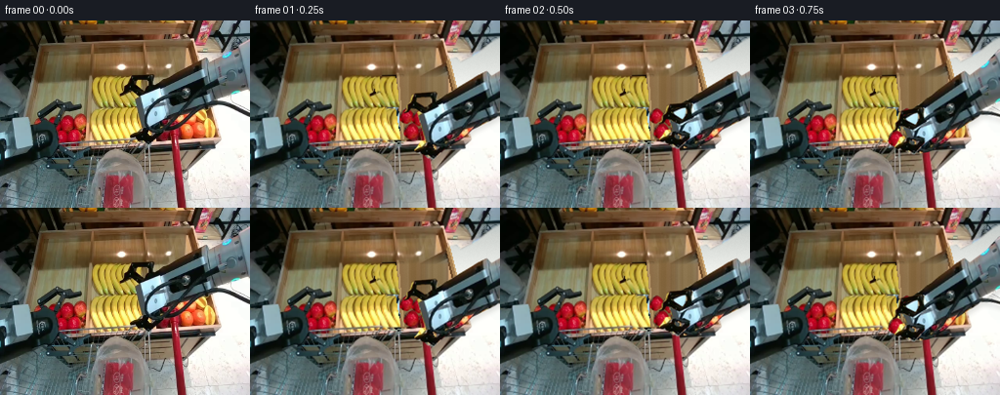
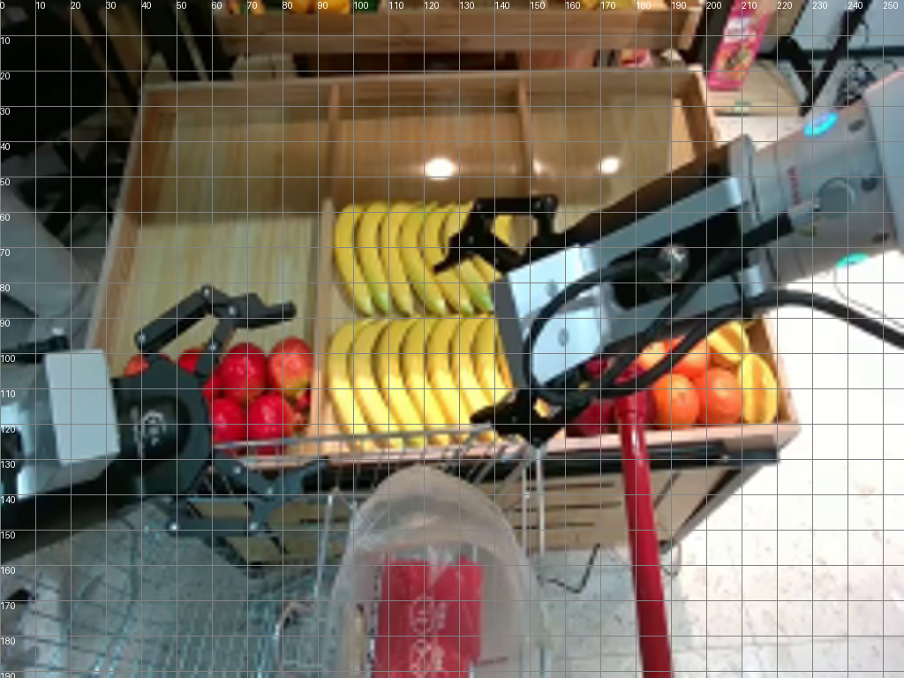
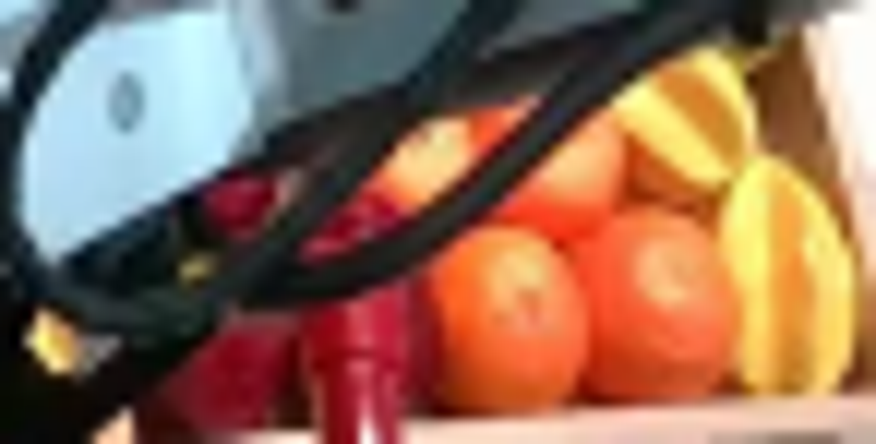
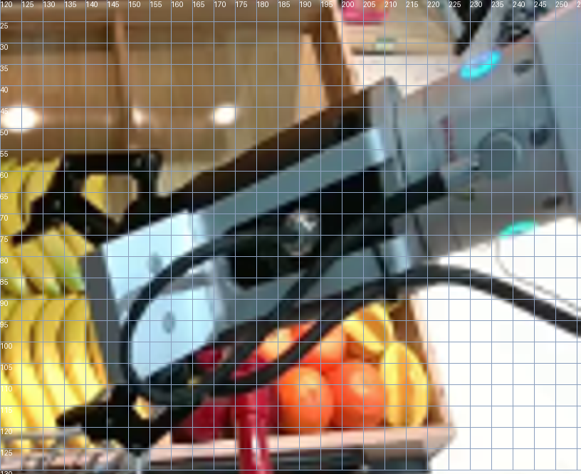
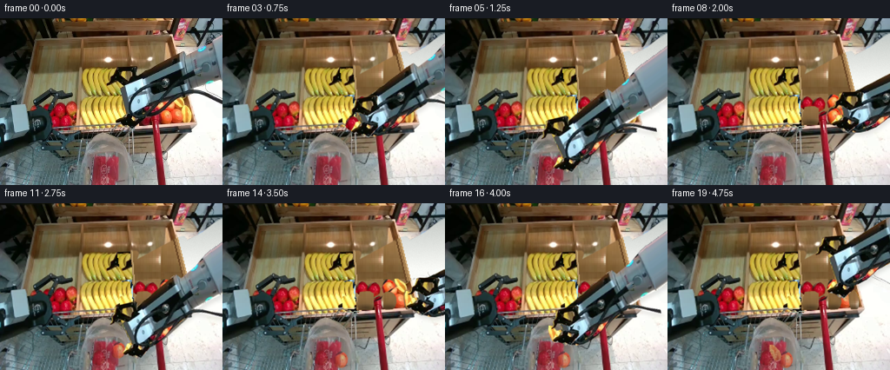
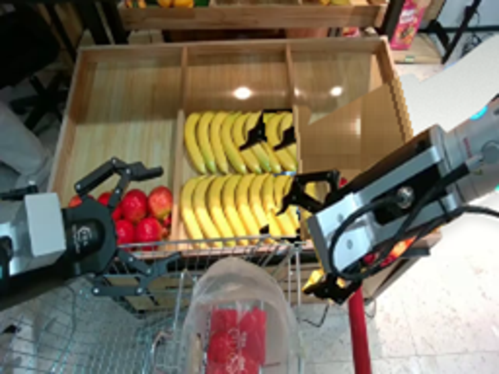

CODING AGENTS AS PIXEL WORLD MODELS
traex/GPT-6-Astra · common50_0000
点击播放 · 原生 RGB 像素
逐轮保存的候选
回放视频、检查图与代码变化。
每份候选均可单独播放。实际图片检查记录在下方工具轨迹中。
候选 01播放与检查图
点击播放 · 原生 RGB 像素


展开代码变化
--- 上一保存版本
+++ 本次保存版本
@@ -0,0 +1,291 @@
+from pathlib import Path
+import math
+import numpy as np
+from PIL import Image, ImageDraw, ImageFilter
+import cv2
+import artifact_io
+
+ROOT = Path(__file__).resolve().parent
+W,H=256,192
+S=4
+original=Image.open(ROOT/'first_frame.png').convert('RGB')
+A=np.asarray(original)
+
+def mask_poly(points, size=(W,H)):
+ im=Image.new('L',(size[0]*S,size[1]*S))
+ ImageDraw.Draw(im).polygon([(round(x*S),round(y*S)) for x,y in points],fill=255)
+ return im.resize(size,Image.Resampling.LANCZOS)
+
+def mask_line(points,width):
+ im=Image.new('L',(W*S,H*S))
+ d=ImageDraw.Draw(im)
+ d.line([(round(x*S),round(y*S)) for x,y in points],fill=255,width=round(width*S),joint='curve')
+ for x,y in points:
+ r=width*S/2
+ d.ellipse((x*S-r,y*S-r,x*S+r,y*S+r),fill=255)
+ return im.resize((W,H),Image.Resampling.LANCZOS)
+
+def union(*ims):
+ return Image.fromarray(np.maximum.reduce([np.asarray(im) for im in ims]))
+
+bodypoly=[(137,77),(205.8,40.0),(210.5,38.6),(214.9,43.7),(233.5,34.2),(247.7,23.0),(255.9,18.3),(258,71.3),(239,76.3),(221,84.0),(217.0,87.2),(155.0,114),(147.0,113),(143.9,106.7)]
+upperpoly=[(122.5,76.1),(125.6,72.2),(126.3,68.1),(130.3,64.3),(132.0,57.1),(135,55.9),(155.9,55.3),(158.4,57.8),(157.1,62.8),(156.4,68.6),(159,70.4),(146,78.3),(141.2,76),(135.3,72.4),(130.5,70.9),(127.3,74.9)]
+lowerpoly=[(139.9,108.0),(146.1,107.3),(151.8,111.2),(158.4,109.7),(164.5,113.1),(164.1,118.1),(158.7,122.2),(151.8,128.0),(145.8,126.1),(142.1,122.2),(137.3,121.1),(134.3,119.2),(132.7,117.0),(136.1,113.9)]
+bodymask=mask_poly(bodypoly)
+topmask=mask_poly(upperpoly)
+botmask=mask_poly(lowerpoly)
+cablepts=[(148.0,105.3),(149.4,110.1),(153.5,112.7),(160.5,112.8),(169,110.8),(178.0,106.8),(187.3,99.7),(195.7,92.0),(203.0,85.9),(209,83.0),(215,82.5),(222,83.4),(231,86.3),(241.6,91.4),(257,97.2)]
+cablemask=mask_line(cablepts,4.3)
+bodymask=union(bodymask,cablemask)
+armmask=union(bodymask,topmask,botmask)
+
+# Fruit samples are taken from the photographed display, including their natural texture.
+apple_pts=[(66.3,97.0),(69.5,97.0),(72.8,99.6),(74.9,103.2),(75.0,108.5),(72,112.0),(67.5,114),(62.8,112.3),(60,109),(60.2,105),(61.7,101.1),(64,98.8)]
+orange_pts=[(189.1,102.7),(193,103.2),(196.1,105.0),(198.5,108.7),(199,113.6),(197.5,118.2),(194.6,121),(189.1,121.4),(185.8,119.8),(183.9,116.4),(183.5,111.5),(184.9,107.7),(186.7,104.5)]
+star_pts=[(211.3,100.6),(214.8,101.9),(217.1,105.4),(219.2,110),(220.0,114),(219.2,118.4),(217,121),(212.2,120.9),(211.1,118.1),(210.1,114.1),(209.4,109.7),(209.6,105.5)]
+
+def fruit_sample(points,center):
+ m=mask_poly(points)
+ rgba=original.convert('RGBA');rgba.putalpha(m)
+ return rgba, np.array(center,dtype=float)
+fruits={
+ 'apple':fruit_sample(apple_pts,(67.5,105.5)),
+ 'orange':fruit_sample(orange_pts,(191.1,112)),
+ 'star':fruit_sample(star_pts,(214.6,111.0))
+}
+centers={'apple':(165.0,113.3),'orange':(191.1,112.0),'star':(214.6,111.0)}
+
+# Restore only the regions revealed as the photographed right hand moves away.
+# Continuous wood grain, the tray rim, fruit, and the floor are all copied or
+# reconstructed from image-space geometry; the camera and all fixed objects stay still.
+rng=np.random.default_rng(614)
+Y,X=np.mgrid[:H,:W]
+recon=A.astype(float).copy()
+# The pale tile to the right of the tray.
+fl= np.zeros_like(recon)
+for c in range(3):
+ fl[:,:,c]=np.interp(Y,[0,28,75,120,192],[[164,181,184,][c],[207,211,207][c],[250,251,247][c],[250,250,246][c],[238,238,232][c]])
+fl+=rng.normal(0,1.1,(H,W,1))
+floorpoly=mask_poly([(196,17),(222,4),(256,6),(256,143),(224,138)])
+recon=np.where(np.asarray(floorpoly)[:,:,None]>120,fl,recon)
+# Warm vertical wood texture sampled from the unobstructed back of this same tray.
+woodpatch=np.asarray(original.crop((97,29,122,55))).astype(float)
+wood=np.empty_like(recon)
+for y in range(H):
+ for x in range(W):
+ sx=int((x-149)*.71)%25
+ sy=int((y-27)*.50)%26
+ tex=woodpatch[sy,sx]
+ # Bright reflection at the back, warmer wood at the front.
+ wood[y,x]=tex*.65+np.array([155,122,77])*.35+np.array([6,5,3])*math.sin(y*.031)
+inside=mask_poly([(148.0,24.3),(195.4,23.1),(218.6,119.9),(154.8,125.4)])
+recon=np.where(np.asarray(inside)[:,:,None]>120,wood,recon)
+# Right wall has a darker vertical edge and an illuminated, bevelled lip.
+rim=Image.fromarray(np.uint8(np.clip(recon,0,255)))
+d=ImageDraw.Draw(rim)
+d.polygon([(195,23),(199,20),(224,121),(219,122)],fill=(164,126,79))
+d.line([(199,23),(223,119)],fill=(204,166,113),width=2)
+d.line([(195,25),(218,119)],fill=(107,73,40),width=2)
+d.line([(155,124),(221,121),(218,126),(155,130)],fill=(145,113,79),width=3)
+d.line([(157,124),(222,121)],fill=(205,173,140),width=2)
+recon=np.asarray(rim).copy()
+# Finish the central banana bunches that were hidden by the wrist.
+for sy0,sy1 in [(57,89),(90,123)]:
+ strip=original.crop((117,sy0,137,sy1)).resize((22,sy1-sy0),Image.Resampling.BICUBIC)
+ tile=Image.new('RGB',(W,H));tile.paste(strip,(134,sy0))
+ region=mask_poly([(135,sy0+1),(149,sy0),(154,sy1-2),(139,sy1)])
+ arr=np.asarray(tile)
+ sel=np.asarray(region)>120
+ recon[sel]=arr[sel]
+# Narrow divider between the bananas and the small-fruit compartment.
+im=Image.fromarray(recon);d=ImageDraw.Draw(im)
+d.line([(149,28),(151,60),(155,121)],fill=(165,137,93),width=2)
+d.line([(150,32),(152,64),(157,121)],fill=(190,160,111),width=1)
+recon=np.asarray(im).copy()
+
+# Copies of visible produce complete the partly occluded back row.
+def simple_paste(bg,key,xy,angle=0,scale=1):
+ src,p=fruits[key]
+ r=math.radians(angle);cs=math.cos(r);sn=math.sin(r)
+ ia=cs/scale;ib=sn/scale;id=-sn/scale;ie=cs/scale
+ tx=p[0]-ia*xy[0]-ib*xy[1]
+ ty=p[1]-id*xy[0]-ie*xy[1]
+ obj=src.transform((W,H),Image.Transform.AFFINE,(ia,ib,tx,id,ie,ty),resample=Image.Resampling.BICUBIC)
+ bg.alpha_composite(obj)
+ return bg
+ri=Image.fromarray(recon).convert('RGBA')
+for key,xy,rot,scale in [('apple',(160,98),-8,.94),('apple',(173.5,99.5),7,1.02),('apple',(178.9,115.5),-3,1.03),('orange',(191.1,96.7),-8,.99),('orange',(204,110.5),4,1.03),('star',(204.9,93.7),-30,.88)]:
+ ri=simple_paste(ri,key,xy,rot,scale)
+# Handle and cart rail remain in their original fixed positions.
+dr=ImageDraw.Draw(ri)
+dr.line([(69,134),(153,127),(173,121)],fill=(93,109,105,255),width=2)
+dr.line([(84,130),(157,124)],fill=(166,177,159,255),width=1)
+dr.line([(176.0,111),(179,132)],fill=(117,10,27,255),width=6)
+dr.line([(174.8,111),(177.7,132)],fill=(185,19,40,255),width=3)
+dr.line([(174.1,112),(177.0,132)],fill=(231,58,71,255),width=1)
+recon=np.asarray(ri.convert('RGB'))
+# Include a one-pixel fringe to remove antialiased edges of the old hand.
+rem=np.asarray(armmask)
+rem=cv2.dilate(rem,np.ones((3,3),np.uint8),iterations=1)
+rem=cv2.GaussianBlur(rem,(3,3),.4)/255.
+base=np.clip(A*(1-rem[:,:,None])+recon*rem[:,:,None],0,255).astype(np.uint8)
+base=Image.fromarray(base).convert('RGBA')
+
+# Wooden vacant spots below each lifted fruit, with neighboring produce preserved.
+def remove_fruit(bg,key):
+ if key=='apple':
+ pts=[(159,103),(168,102),(173.4,105),(173.6,117),(170,123),(157.5,123),(156,117),(156.9,109)]
+ elif key=='orange': pts=orange_pts
+ else: pts=star_pts
+ m=np.asarray(mask_poly(pts))
+ m=cv2.dilate(m,np.ones((3,3),np.uint8),iterations=1)
+ # Front of the wooden compartment is darker where produce casts a shadow.
+ empty=wood.copy()
+ sh=np.exp(-(((X-centers[key][0])/11)**2+((Y-120)/4)**2))*.38
+ empty*=1-sh[:,:,None]
+ # The original lower rim is not altered.
+ keep=Y>=123
+ empty[keep]=A[keep]
+ if key=='apple':
+ # Adjacent red cart rail is in front of the display.
+ keep=(X>=174)
+ empty[keep]=np.asarray(bg.convert('RGB'))[keep]
+ a=m.astype(float)/255
+ out=np.asarray(bg.convert('RGB'))*(1-a[:,:,None])+empty*a[:,:,None]
+ return Image.fromarray(np.uint8(np.clip(out,0,255))).convert('RGBA')
+
+# Extract the original rigid end effector and two independent sliding jaws.
+# Extend only the portion of the forearm originally continuing outside the image.
+OX,OY=55,215
+CW,CH=650,465
+
+def make_sprite(mask,extend=False):
+ rgba=np.zeros((CH,CW,4),dtype=np.uint8)
+ rgba[OY:OY+H,OX:OX+W,:3]=A
+ rgba[OY:OY+H,OX:OX+W,3]=np.asarray(mask)
+ if extend:
+ ed=A[:,254,:].astype(float)
+ for x in range(256,570):
+ dx=x-255
+ for y in range(max(-OY,int(18-.445*dx)-1),min(CH-OY,int(73-.445*dx)+2)):
+ yy=y+.445*dx
+ if 18.6<=yy<=72.3:
+ iy=int(np.clip(yy,0,H-2));f=yy-iy
+ col=ed[iy]*(1-f)+ed[iy+1]*f
+ col*=1-.035*min(dx/100,1)
+ if 45<dx<48: col*=.76
+ rgba[y+OY,x+OX,:3]=np.uint8(np.clip(col,0,255))
+ rgba[y+OY,x+OX,3]=255
+ return Image.fromarray(rgba).resize((CW*S,CH*S),Image.Resampling.BICUBIC)
+body=make_sprite(bodymask,True)
+upper=make_sprite(topmask)
+lower=make_sprite(botmask)
+P=np.array([130.,96.])
+normal=np.array([.382,.924])
+
+def transform_sprite(src,q,angle,slide=0):
+ r=math.radians(angle);c=math.cos(r);s=math.sin(r)
+ # source = P + R^-1(output-q) - jaw slide + canvas origin
+ a,b=c,s;dd,e=-s,c
+ shift=normal*slide
+ tx=(P[0]+OX-shift[0]-a*q[0]-b*q[1])*S
+ ty=(P[1]+OY-shift[1]-dd*q[0]-e*q[1])*S
+ return src.transform((W*S,H*S),Image.Transform.AFFINE,(a,b,tx,dd,e,ty),resample=Image.Resampling.BICUBIC)
+
+def fruit_layer(key,xy,angle=0,scale=1):
+ src,p=fruits[key]
+ src=src.resize((W*S,H*S),Image.Resampling.BICUBIC)
+ rr=math.radians(angle);c=math.cos(rr)/scale;s=math.sin(rr)/scale
+ return src.transform((W*S,H*S),Image.Transform.AFFINE,(c,s,(p[0]-c*xy[0]-s*xy[1])*S,-s,c,(p[1]+s*xy[0]-c*xy[1])*S),resample=Image.Resampling.BICUBIC)
+
+def bag_fruit(scene,key,xy,angle):
+ ob=fruit_layer(key,xy,angle)
+ # The translucent bag front lies between the camera and the deposited fruit.
+ alpha=np.asarray(ob.getchannel('A')).astype(float)/255
+ scene.alpha_composite(ob)
+ orig=original.resize((W*S,H*S),Image.Resampling.BICUBIC).convert('RGBA')
+ yy,xx=np.mgrid[:H*S,:W*S]; xx=xx/S; yy=yy/S
+ print_px=np.asarray(orig)[:,:,:3].astype(float)
+ red=(print_px[:,:,0]>print_px[:,:,1]*1.34)&(print_px[:,:,0]>80)&(yy>159)&(xx>107)&(xx<138)
+ opacity=.23+.16*np.clip((yy-155)/25,0,1)+.23*red
+ # Highlights and film wrinkles remain recognizable above the fruit texture.
+ opacity+=.1*(np.sin(xx*2.8+yy*.37)**18)
+ orig.putalpha(Image.fromarray(np.uint8(np.clip(alpha*opacity*255,0,255))))
+ scene.alpha_composite(orig)
+ return scene
+
+# Six sampled phases per fruit: approach, close, lift, carry, release, withdraw.
+# All end-effector transforms are rigid planar motions; only the jaw separation changes.
+poses=[
+ ((130,96),0,0),
+ ((165,113.3),-3,.10),
+ ((165,113.3),-3,.82),
+ ((149,121),-9,.82),
+ ((120,149),-12,.82),
+ ((120,154),-12,.23),
+ ((150,129),-6,.06),
+ ((191.1,112),1,.09),
+ ((191.1,112),1,.80),
+ ((174,122),-7,.80),
+ ((136,151),-12,.80),
+ ((136,155),-12,.21),
+ ((168,129),-6,.04),
+ ((214.6,111),2,.16),
+ ((214.6,111),2,.91),
+ ((178,127),-6,.91),
+ ((125,150),-12,.91),
+ ((125,155),-12,.20),
+ ((153,119),-9,.04),
+ ((179,79),-4,0),
+]
+frames=[A.copy()]
+for i in range(1,20):
+ bg=base.copy()
+ # Original orange and star fruit remain exactly where photographed until picked up.
+ if i>=2:bg=remove_fruit(bg,'apple')
+ if i>=8:bg=remove_fruit(bg,'orange')
+ if i>=14:bg=remove_fruit(bg,'star')
+ scene=bg.resize((W*S,H*S),Image.Resampling.BICUBIC)
+ if i<2:
+ scene.alpha_composite(fruit_layer('apple',centers['apple']))
+ # Settled fruit accumulates in the same plastic bag, never vanishing on release.
+ if i>=5:
+ pos=(118,168) if i==5 else (113,178)
+ scene=bag_fruit(scene,'apple',pos,-20)
+ if i>=11:
+ pos=(136,169) if i==11 else (136,180)
+ scene=bag_fruit(scene,'orange',pos,12)
+ if i>=17:
+ pos=(125,165) if i==17 else (124,172)
+ scene=bag_fruit(scene,'star',pos,-18)
+ q,ang,close=poses[i]
+ moving=None
+ if 2<=i<=4:moving='apple'
+ if 8<=i<=10:moving='orange'
+ if 14<=i<=16:moving='star'
+ b=transform_sprite(body,q,ang)
+ u=transform_sprite(upper,q,ang,17.0*close)
+ l=transform_sprite(lower,q,ang,-17.0*close)
+ ar=Image.new('RGBA',(W*S,H*S));ar.alpha_composite(b);ar.alpha_composite(u);ar.alpha_composite(l)
+ # Contact shadow is soft and subtle under the moving tool.
+ ma=ar.getchannel('A').filter(ImageFilter.GaussianBlur(2.2*S))
+ sh=Image.new('RGBA',scene.size,(25,22,15,0))
+ ma=ma.point(lambda p: int(p*.115))
+ sh.putalpha(ma)
+ shifted=Image.new('RGBA',scene.size);shifted.alpha_composite(sh,(2*S,4*S))
+ scene.alpha_composite(shifted)
+ if moving:
+ pickang={'apple':-3,'orange':1,'star':2}[moving]
+ scene.alpha_composite(fruit_layer(moving,q,ang-pickang))
+ scene.alpha_composite(ar)
+ frames.append(np.asarray(scene.convert('RGB').resize((W,H),Image.Resampling.LANCZOS)))
+frames=np.stack(frames).astype(np.uint8)
+assert np.array_equal(frames[0],A)
+artifact_io.save(frames,ROOT)
+# A standard RGB video is provided as well as the required lossless frame artifacts.
+try:
+ import imageio.v2 as imageio
+ imageio.mimwrite(ROOT/'video.mp4',frames,fps=4,codec='libx264',quality=9,macro_block_size=1,pixelformat='yuv420p')
+except Exception as exc:
+ print('Optional MP4 encoding:',exc)
+print('Saved',frames.shape,'RGB frames')
候选 02播放与检查图
点击播放 · 原生 RGB 像素


展开代码变化
--- 上一保存版本
+++ 本次保存版本
@@ -33,11 +33,16 @@
lowerpoly=[(139.9,108.0),(146.1,107.3),(151.8,111.2),(158.4,109.7),(164.5,113.1),(164.1,118.1),(158.7,122.2),(151.8,128.0),(145.8,126.1),(142.1,122.2),(137.3,121.1),(134.3,119.2),(132.7,117.0),(136.1,113.9)]
bodymask=mask_poly(bodypoly)
topmask=mask_poly(upperpoly)
+# Open space between the two black links is not part of the gripper.
+upper_hole=mask_poly([(137.0,60.8),(151.0,60.5),(150.2,68.6),(146.8,71.9),(136.0,64.4)])
+topmask=Image.fromarray(np.uint8(np.clip(np.asarray(topmask).astype(float)-np.asarray(upper_hole),0,255)))
botmask=mask_poly(lowerpoly)
+lower_hole=mask_poly([(149.2,112.6),(154.0,114.7),(153.3,118.2),(150.0,117.3),(148.6,115.2)])
+botmask=Image.fromarray(np.uint8(np.clip(np.asarray(botmask).astype(float)-np.asarray(lower_hole),0,255)))
cablepts=[(148.0,105.3),(149.4,110.1),(153.5,112.7),(160.5,112.8),(169,110.8),(178.0,106.8),(187.3,99.7),(195.7,92.0),(203.0,85.9),(209,83.0),(215,82.5),(222,83.4),(231,86.3),(241.6,91.4),(257,97.2)]
cablemask=mask_line(cablepts,4.3)
bodymask=union(bodymask,cablemask)
-armmask=union(bodymask,topmask,botmask)
+armmask=union(bodymask,mask_poly(upperpoly),mask_poly(lowerpoly))
# Fruit samples are taken from the photographed display, including their natural texture.
apple_pts=[(66.3,97.0),(69.5,97.0),(72.8,99.6),(74.9,103.2),(75.0,108.5),(72,112.0),(67.5,114),(62.8,112.3),(60,109),(60.2,105),(61.7,101.1),(64,98.8)]
@@ -69,15 +74,15 @@
floorpoly=mask_poly([(196,17),(222,4),(256,6),(256,143),(224,138)])
recon=np.where(np.asarray(floorpoly)[:,:,None]>120,fl,recon)
# Warm vertical wood texture sampled from the unobstructed back of this same tray.
-woodpatch=np.asarray(original.crop((97,29,122,55))).astype(float)
wood=np.empty_like(recon)
+# Continue the real vertical grain from a clean horizontal band of the right bin.
+woodband=np.mean(A[32:38,151:193,:].astype(float),axis=0)
for y in range(H):
for x in range(W):
- sx=int((x-149)*.71)%25
- sy=int((y-27)*.50)%26
- tex=woodpatch[sy,sx]
- # Bright reflection at the back, warmer wood at the front.
- wood[y,x]=tex*.65+np.array([155,122,77])*.35+np.array([6,5,3])*math.sin(y*.031)
+ sx=int(np.clip((x-151)*.76,0,41))
+ tex=woodband[sx]
+ shade=1-.045*np.clip((y-45)/70,0,1)
+ wood[y,x]=tex*shade + rng.normal(0,.65)+.65*math.sin(y*.24)
inside=mask_poly([(148.0,24.3),(195.4,23.1),(218.6,119.9),(154.8,125.4)])
recon=np.where(np.asarray(inside)[:,:,None]>120,wood,recon)
# Right wall has a darker vertical edge and an illuminated, bevelled lip.
@@ -91,9 +96,11 @@
recon=np.asarray(rim).copy()
# Finish the central banana bunches that were hidden by the wrist.
for sy0,sy1 in [(57,89),(90,123)]:
- strip=original.crop((117,sy0,137,sy1)).resize((22,sy1-sy0),Image.Resampling.BICUBIC)
- tile=Image.new('RGB',(W,H));tile.paste(strip,(134,sy0))
- region=mask_poly([(135,sy0+1),(149,sy0),(154,sy1-2),(139,sy1)])
+ strip=original.crop((96,sy0,118,sy1)).resize((24,sy1-sy0),Image.Resampling.BICUBIC)
+ tile=Image.new('RGB',(W,H));tile.paste(strip,(131,sy0))
+ region=mask_poly([(123,sy0),(149,sy0),(154,sy1),(134,sy1)])
+ # Add the clean strip twice where the old upper jaw covered the bunch.
+ tile.paste(strip,(121,sy0));tile.paste(strip,(133,sy0))
arr=np.asarray(tile)
sel=np.asarray(region)>120
recon[sel]=arr[sel]
@@ -123,18 +130,27 @@
dr.line([(176.0,111),(179,132)],fill=(117,10,27,255),width=6)
dr.line([(174.8,111),(177.7,132)],fill=(185,19,40,255),width=3)
dr.line([(174.1,112),(177.0,132)],fill=(231,58,71,255),width=1)
-recon=np.asarray(ri.convert('RGB'))
+recon=np.asarray(ri.convert('RGB')).copy()
# Include a one-pixel fringe to remove antialiased edges of the old hand.
rem=np.asarray(armmask)
rem=cv2.dilate(rem,np.ones((3,3),np.uint8),iterations=1)
-rem=cv2.GaussianBlur(rem,(3,3),.4)/255.
+rem=cv2.GaussianBlur(rem,(5,5),.75)/255.
+# Replace the right-bin back consistently, not in the old diagonal arm silhouette.
+continuous=np.asarray(mask_poly([(153,46),(196,44),(207,85),(155,87)]))/255.
+continuous*=np.clip((Y-45)/12,0,1)
+rem=np.maximum(rem,continuous)
+# Feather the wood transition at the back of the tray.
+blend=np.clip((Y-43)/15,0,1)[:,:,None]
+woodarea=(np.asarray(inside)>100)&(Y<89)
+soft=np.uint8(A*(1-blend)+recon*blend)
+recon[woodarea]=soft[woodarea]
base=np.clip(A*(1-rem[:,:,None])+recon*rem[:,:,None],0,255).astype(np.uint8)
base=Image.fromarray(base).convert('RGBA')
# Wooden vacant spots below each lifted fruit, with neighboring produce preserved.
def remove_fruit(bg,key):
if key=='apple':
- pts=[(159,103),(168,102),(173.4,105),(173.6,117),(170,123),(157.5,123),(156,117),(156.9,109)]
+ pts=[(x+97.5,y+7.8) for x,y in apple_pts]
elif key=='orange': pts=orange_pts
else: pts=star_pts
m=np.asarray(mask_poly(pts))
可观测工具轨迹
实际执行的命令与返回图片。
命令 1exit 0
/bin/bash -lc "ls -la && cat prompt.txt && printf '\\n---RULES---\\n' && cat GENERATION_RULES.md"
命令 2exit 0
/bin/bash -lc "cat task_spec.json && cat artifact_io.py && python - <<'PY'
from PIL import Image
im=Image.open('first_frame.png'); im.resize((1024,768)).save('.tmp/enlarged.png')
PY"命令 3exit 0
/bin/bash -lc "python - <<'PY'
from PIL import Image,ImageDraw
im=Image.open('first_frame.png').resize((1024,768));d=ImageDraw.Draw(im)
for x in range(0,256,10):
d.line((x*4,0,x*4,768), fill=(130,130,130),width=1); d.text((x*4,0),str(x),fill='white')
for y in range(10,192,10):
d.line((0,y*4,1024,y*4),fill=(130,130,130),width=1);d.text((0,y*4),str(y),fill='white')
im.save('.tmp/grid.png')
PY"命令 4exit 0
/bin/bash -lc "python - <<'PY' import importlib.util for s in ['numpy','PIL','cv2','scipy','imageio','imageio_ffmpeg']: print(s,bool(importlib.util.find_spec(s))) PY"
命令 5exit 0
/bin/bash -lc "python - <<'PY'
from PIL import Image
im=Image.open('first_frame.png')
im.crop((149,87,222,124)).resize((876,444)).save('.tmp/fruits.png')
PY"命令 6exit 0
/bin/bash -lc "python - <<'PY'
from PIL import Image,ImageDraw
im=Image.open('first_frame.png').resize((1536,1152)); d=ImageDraw.Draw(im)
for x in range(120,256,5):
d.line((x*6,20*6,x*6,130*6),fill=(140,160,190),width=1);d.text((x*6,20*6),str(x),fill='white')
for y in range(25,131,5):
d.line((120*6,y*6,1536,y*6),fill=(140,160,190),width=1);d.text((120*6,y*6),str(y),fill='white')
im.crop((120*6,20*6,1536,131*6)).save('.tmp/armgrid.png')
PY"命令 7exit 0
/bin/bash -lc "cat > generate.py <<'PY'
from pathlib import Path
import math
import numpy as np
from PIL import Image, ImageDraw, ImageFilter
import cv2
import artifact_io
ROOT = Path(__file__).resolve().parent
W,H=256,192
S=4
original=Image.open(ROOT/'first_frame.png').convert('RGB')
A=np.asarray(original)
def mask_poly(points, size=(W,H)):
im=Image.new('L',(size[0]*S,size[1]*S))
ImageDraw.Draw(im).polygon([(round(x*S),round(y*S)) for x,y in points],fill=255)
return im.resize(size,Image.Resampling.LANCZOS)
def mask_line(points,width):
im=Image.new('L',(W*S,H*S))
d=ImageDraw.Draw(im)
d.line([(round(x*S),round(y*S)) for x,y in points],fill=255,width=round(width*S),joint='curve')
for x,y in points:
r=width*S/2
d.ellipse((x*S-r,y*S-r,x*S+r,y*S+r),fill=255)
return im.resize((W,H),Image.Resampling.LANCZOS)
def union(*ims):
return Image.fromarray(np.maximum.reduce([np.asarray(im) for im in ims]))
bodypoly=[(137,77),(205.8,40.0),(210.5,38.6),(214.9,43.7),(233.5,34.2),(247.7,23.0),(255.9,18.3),(258,71.3),(239,76.3),(221,84.0),(217.0,87.2),(155.0,114),(147.0,113),(143.9,106.7)]
upperpoly=[(122.5,76.1),(125.6,72.2),(126.3,68.1),(130.3,64.3),(132.0,57.1),(135,55.9),(155.9,55.3),(158.4,57.8),(157.1,62.8),(156.4,68.6),(159,70.4),(146,78.3),(141.2,76),(135.3,72.4),(130.5,70.9),(127.3,74.9)]
lowerpoly=[(139.9,108.0),(146.1,107.3),(151.8,111.2),(158.4,109.7),(164.5,113.1),(164.1,118.1),(158.7,122.2),(151.8,128.0),(145.8,126.1),(142.1,122.2),(137.3,121.1),(134.3,119.2),(132.7,117.0),(136.1,113.9)]
bodymask=mask_poly(bodypoly)
topmask=mask_poly(upperpoly)
botmask=mask_poly(lowerpoly)
cablepts=[(148.0,105.3),(149.4,110.1),(153.5,112.7),(160.5,112.8),(169,110.8),(178.0,106.8),(187.3,99.7),(195.7,92.0),(203.0,85.9),(209,83.0),(215,82.5),(222,83.4),(231,86.3),(241.6,91.4),(257,97.2)]
cablemask=mask_line(cablepts,4.3)
bodymask=union(bodymask,cablemask)
armmask=union(bodymask,topmask,botmask)
# Fruit samples are taken from the photographed display, including their natural texture.
apple_pts=[(66.3,97.0),(69.5,97.0),(72.8,99.6),(74.9,103.2),(75.0,108.5),(72,112.0),(67.5,114),(62.8,112.3),(60,109),(60.2,105),(61.7,101.1),(64,98.8)]
orange_pts=[(189.1,102.7),(193,103.2),(196.1,105.0),(198.5,108.7),(199,113.6),(197.5,118.2),(194.6,121),(189.1,121.4),(185.8,119.8),(183.9,116.4),(183.5,111.5),(184.9,107.7),(186.7,104.5)]
star_pts=[(211.3,100.6),(214.8,101.9),(217.1,105.4),(219.2,110),(220.0,114),(219.2,118.4),(217,121),(212.2,120.9),(211.1,118.1),(210.1,114.1),(209.4,109.7),(209.6,105.5)]
def fruit_sample(points,center):
m=mask_poly(points)
rgba=original.convert('RGBA');rgba.putalpha(m)
return rgba, np.array(center,dtype=float)
fruits={
'apple':fruit_sample(apple_pts,(67.5,105.5)),
'orange':fruit_sample(orange_pts,(191.1,112)),
'star':fruit_sample(star_pts,(214.6,111.0))
}
centers={'apple':(165.0,113.3),'orange':(191.1,112.0),'star':(214.6,111.0)}
# Restore only the regions revealed as the photographed right hand moves away.
# Continuous wood grain, the tray rim, fruit, and the floor are all copied or
# reconstructed from image-space geometry; the camera and all fixed objects stay still.
rng=np.random.default_rng(614)
Y,X=np.mgrid[:H,:W]
recon=A.astype(float).copy()
# The pale tile to the right of the tray.
fl= np.zeros_like(recon)
for c in range(3):
fl[:,:,c]=np.interp(Y,[0,28,75,120,192],[[164,181,184,][c],[207,211,207][c],[250,251,247][c],[250,250,246][c],[238,238,232][c]])
fl+=rng.normal(0,1.1,(H,W,1))
floorpoly=mask_poly([(196,17),(222,4),(256,6),(256,143),(224,138)])
recon=np.where(np.asarray(floorpoly)[:,:,None]>120,fl,recon)
# Warm vertical wood texture sampled from the unobstructed back of this same tray.
woodpatch=np.asarray(original.crop((97,29,122,55))).astype(float)
wood=np.empty_like(recon)
for y in range(H):
for x in range(W):
sx=int((x-149)*.71)%25
sy=int((y-27)*.50)%26
tex=woodpatch[sy,sx]
# Bright reflection at the back, warmer wood at the front.
wood[y,x]=tex*.65+np.array([155,122,77])*.35+np.array([6,5,3])*math.sin(y*.031)
inside=mask_poly([(148.0,24.3),(195.4,23.1),(218.6,119.9),(154.8,125.4)])
recon=np.where(np.asarray(inside)[:,:,None]>120,wood,recon)
# Right wall has a darker vertical edge and an illuminated, bevelled lip.
rim=Image.fromarray(np.uint8(np.clip(recon,0,255)))
d=ImageDraw.Draw(rim)
d.polygon([(195,23),(199,20),(224,121),(219,122)],fill=(164,126,79))
d.line([(199,23),(223,119)],fill=(204,166,113),width=2)
d.line([(195,25),(218,119)],fill=(107,73,40),width=2)
d.line([(155,124),(221,121),(218,126),(155,130)],fill=(145,113,79),width=3)
d.line([(157,124),(222,121)],fill=(205,173,140),width=2)
recon=np.asarray(rim).copy()
# Finish the central banana bunches that were hidden by the wrist.
for sy0,sy1 in [(57,89),(90,123)]:
strip=original.crop((117,sy0,137,sy1)).resize((22,sy1-sy0),Image.Resampling.BICUBIC)
tile=Image.new('RGB',(W,H));tile.paste(strip,(134,sy0))
region=mask_poly([(135,sy0+1),(149,sy0),(154,sy1-2),(139,sy1)])
arr=np.asarray(tile)
sel=np.asarray(region)>120
recon[sel]=arr[sel]
# Narrow divider between the bananas and the small-fruit compartment.
im=Image.fromarray(recon);d=ImageDraw.Draw(im)
d.line([(149,28),(151,60),(155,121)],fill=(165,137,93),width=2)
d.line([(150,32),(152,64),(157,121)],fill=(190,160,111),width=1)
recon=np.asarray(im).copy()
# Copies of visible produce complete the partly occluded back row.
def simple_paste(bg,key,xy,angle=0,scale=1):
src,p=fruits[key]
r=math.radians(angle);cs=math.cos(r);sn=math.sin(r)
ia=cs/scale;ib=sn/scale;id=-sn/scale;ie=cs/scale
tx=p[0]-ia*xy[0]-ib*xy[1]
ty=p[1]-id*xy[0]-ie*xy[1]
obj=src.transform((W,H),Image.Transform.AFFINE,(ia,ib,tx,id,ie,ty),resample=Image.Resampling.BICUBIC)
bg.alpha_composite(obj)
return bg
ri=Image.fromarray(recon).convert('RGBA')
for key,xy,rot,scale in [('apple',(160,98),-8,.94),('apple',(173.5,99.5),7,1.02),('apple',(178.9,115.5),-3,1.03),('orange',(191.1,96.7),-8,.99),('orange',(204,110.5),4,1.03),('star',(204.9,93.7),-30,.88)]:
ri=simple_paste(ri,key,xy,rot,scale)
# Handle and cart rail remain in their original fixed positions.
dr=ImageDraw.Draw(ri)
dr.line([(69,134),(153,127),(173,121)],fill=(93,109,105,255),width=2)
dr.line([(84,130),(157,124)],fill=(166,177,159,255),width=1)
dr.line([(176.0,111),(179,132)],fill=(117,10,27,255),width=6)
dr.line([(174.8,111),(177.7,132)],fill=(185,19,40,255),width=3)
dr.line([(174.1,112),(177.0,132)],fill=(231,58,71,255),width=1)
recon=np.asarray(ri.convert('RGB'))
# Include a one-pixel fringe to remove antialiased edges of the old hand.
rem=np.asarray(armmask)
rem=cv2.dilate(rem,np.ones((3,3),np.uint8),iterations=1)
rem=cv2.GaussianBlur(rem,(3,3),.4)/255.
base=np.clip(A*(1-rem[:,:,None])+recon*rem[:,:,None],0,255).astype(np.uint8)
base=Image.fromarray(base).convert('RGBA')
# Wooden vacant spots below each lifted fruit, with neighboring produce preserved.
def remove_fruit(bg,key):
if key=='apple':
pts=[(159,103),(168,102),(173.4,105),(173.6,117),(170,123),(157.5,123),(156,117),(156.9,109)]
elif key=='orange': pts=orange_pts
else: pts=star_pts
m=np.asarray(mask_poly(pts))
m=cv2.dilate(m,np.ones((3,3),np.uint8),iterations=1)
# Front of the wooden compartment is darker where produce casts a shadow.
empty=wood.copy()
sh=np.exp(-(((X-centers[key][0])/11)**2+((Y-120)/4)**2))*.38
empty*=1-sh[:,:,None]
# The original lower rim is not altered.
keep=Y>=123
empty[keep]=A[keep]
if key=='apple':
# Adjacent red cart rail is in front of the display.
keep=(X>=174)
empty[keep]=np.asarray(bg.convert('RGB'))[keep]
a=m.astype(float)/255
out=np.asarray(bg.convert('RGB'))*(1-a[:,:,None])+empty*a[:,:,None]
return Image.fromarray(np.uint8(np.clip(out,0,255))).convert('RGBA')
# Extract the original rigid end effector and two independent sliding jaws.
# Extend only the portion of the forearm originally continuing outside the image.
OX,OY=55,215
CW,CH=650,465
def make_sprite(mask,extend=False):
rgba=np.zeros((CH,CW,4),dtype=np.uint8)
rgba[OY:OY+H,OX:OX+W,:3]=A
rgba[OY:OY+H,OX:OX+W,3]=np.asarray(mask)
if extend:
ed=A[:,254,:].astype(float)
for x in range(256,570):
dx=x-255
for y in range(max(-OY,int(18-.445*dx)-1),min(CH-OY,int(73-.445*dx)+2)):
yy=y+.445*dx
if 18.6<=yy<=72.3:
iy=int(np.clip(yy,0,H-2));f=yy-iy
col=ed[iy]*(1-f)+ed[iy+1]*f
col*=1-.035*min(dx/100,1)
if 45<dx<48: col*=.76
rgba[y+OY,x+OX,:3]=np.uint8(np.clip(col,0,255))
rgba[y+OY,x+OX,3]=255
return Image.fromarray(rgba).resize((CW*S,CH*S),Image.Resampling.BICUBIC)
body=make_sprite(bodymask,True)
upper=make_sprite(topmask)
lower=make_sprite(botmask)
P=np.array([130.,96.])
normal=np.array([.382,.924])
def transform_sprite(src,q,angle,slide=0):
r=math.radians(angle);c=math.cos(r);s=math.sin(r)
# source = P + R"'^-1(output-q) - jaw slide + canvas origin
a,b=c,s;dd,e=-s,c
shift=normal*slide
tx=(P[0]+OX-shift[0]-a*q[0]-b*q[1])*S
ty=(P[1]+OY-shift[1]-dd*q[0]-e*q[1])*S
return src.transform((W*S,H*S),Image.Transform.AFFINE,(a,b,tx,dd,e,ty),resample=Image.Resampling.BICUBIC)
def fruit_layer(key,xy,angle=0,scale=1):
src,p=fruits[key]
src=src.resize((W*S,H*S),Image.Resampling.BICUBIC)
rr=math.radians(angle);c=math.cos(rr)/scale;s=math.sin(rr)/scale
return src.transform((W*S,H*S),Image.Transform.AFFINE,(c,s,(p[0]-c*xy[0]-s*xy[1])*S,-s,c,(p[1]+s*xy[0]-c*xy[1])*S),resample=Image.Resampling.BICUBIC)
def bag_fruit(scene,key,xy,angle):
ob=fruit_layer(key,xy,angle)
# The translucent bag front lies between the camera and the deposited fruit.
alpha=np.asarray(ob.getchannel('"'A')).astype(float)/255
scene.alpha_composite(ob)
orig=original.resize((W*S,H*S),Image.Resampling.BICUBIC).convert('RGBA')
yy,xx=np.mgrid[:H*S,:W*S]; xx=xx/S; yy=yy/S
print_px=np.asarray(orig)[:,:,:3].astype(float)
red=(print_px[:,:,0]>print_px[:,:,1]*1.34)&(print_px[:,:,0]>80)&(yy>159)&(xx>107)&(xx<138)
opacity=.23+.16*np.clip((yy-155)/25,0,1)+.23*red
# Highlights and film wrinkles remain recognizable above the fruit texture.
opacity+=.1*(np.sin(xx*2.8+yy*.37)**18)
orig.putalpha(Image.fromarray(np.uint8(np.clip(alpha*opacity*255,0,255))))
scene.alpha_composite(orig)
return scene
# Six sampled phases per fruit: approach, close, lift, carry, release, withdraw.
# All end-effector transforms are rigid planar motions; only the jaw separation changes.
poses=[
((130,96),0,0),
((165,113.3),-3,.10),
((165,113.3),-3,.82),
((149,121),-9,.82),
((120,149),-12,.82),
((120,154),-12,.23),
((150,129),-6,.06),
((191.1,112),1,.09),
((191.1,112),1,.80),
((174,122),-7,.80),
((136,151),-12,.80),
((136,155),-12,.21),
((168,129),-6,.04),
((214.6,111),2,.16),
((214.6,111),2,.91),
((178,127),-6,.91),
((125,150),-12,.91),
((125,155),-12,.20),
((153,119),-9,.04),
((179,79),-4,0),
]
frames=[A.copy()]
for i in range(1,20):
bg=base.copy()
# Original orange and star fruit remain exactly where photographed until picked up.
if i>=2:bg=remove_fruit(bg,'apple')
if i>=8:bg=remove_fruit(bg,'orange')
if i>=14:bg=remove_fruit(bg,'star')
scene=bg.resize((W*S,H*S),Image.Resampling.BICUBIC)
if i<2:
scene.alpha_composite(fruit_layer('apple',centers['apple']))
# Settled fruit accumulates in the same plastic bag, never vanishing on release.
if i>=5:
pos=(118,168) if i==5 else (113,178)
scene=bag_fruit(scene,'apple',pos,-20)
if i>=11:
pos=(136,169) if i==11 else (136,180)
scene=bag_fruit(scene,'orange',pos,12)
if i>=17:
pos=(125,165) if i==17 else (124,172)
scene=bag_fruit(scene,'star',pos,-18)
q,ang,close=poses[i]
moving=None
if 2<=i<=4:moving='apple'
if 8<=i<=10:moving='orange'
if 14<=i<=16:moving='star'
b=transform_sprite(body,q,ang)
u=transform_sprite(upper,q,ang,17.0*close)
l=transform_sprite(lower,q,ang,-17.0*close)
ar=Image.new('RGBA',(W*S,H*S));ar.alpha_composite(b);ar.alpha_composite(u);ar.alpha_composite(l)
# Contact shadow is soft and subtle under the moving tool.
ma=ar.getchannel('A').filter(ImageFilter.GaussianBlur(2.2*S))
sh=Image.new('RGBA',scene.size,(25,22,15,0))
ma=ma.point(lambda p: int(p*.115))
sh.putalpha(ma)
shifted=Image.new('RGBA',scene.size);shifted.alpha_composite(sh,(2*S,4*S))
scene.alpha_composite(shifted)
if moving:
pickang={'apple':-3,'orange':1,'star':2}[moving]
scene.alpha_composite(fruit_layer(moving,q,ang-pickang))
scene.alpha_composite(ar)
frames.append(np.asarray(scene.convert('RGB').resize((W,H),Image.Resampling.LANCZOS)))
frames=np.stack(frames).astype(np.uint8)
assert np.array_equal(frames[0],A)
artifact_io.save(frames,ROOT)
# A standard RGB video is provided as well as the required lossless frame artifacts.
try:
import imageio.v2 as imageio
imageio.mimwrite(ROOT/'video.mp4',frames,fps=4,codec='libx264',quality=9,macro_block_size=1,pixelformat='yuv420p')
except Exception as exc:
print('Optional MP4 encoding:',exc)
print('Saved',frames.shape,'RGB frames')
PY
python generate.py"命令 8exit 0
/bin/bash -lc "python - <<'PY'
from PIL import Image
Image.open('frames/06.png').resize((1024,768)).save('.tmp/frame06.png')
PY"命令 9exit 1
/bin/bash -lc "python - <<'PY'
p='generate.py'
s=open(p).read()
s=s.replace(\"topmask=mask_poly(upperpoly)\\nbotmask=mask_poly(lowerpoly)\",\"\"\"topmask=mask_poly(upperpoly)
# Open space between the two black links is not part of the gripper.
upper_hole=mask_poly([(137.0,60.8),(151.0,60.5),(150.2,68.6),(146.8,71.9),(136.0,64.4)])
topmask=Image.fromarray(np.uint8(np.clip(np.asarray(topmask).astype(float)-np.asarray(upper_hole),0,255)))
botmask=mask_poly(lowerpoly)
lower_hole=mask_poly([(149.2,112.6),(154.0,114.7),(153.3,118.2),(150.0,117.3),(148.6,115.2)])
botmask=Image.fromarray(np.uint8(np.clip(np.asarray(botmask).astype(float)-np.asarray(lower_hole),0,255)))\"\"\")
s=s.replace(\"armmask=union(bodymask,topmask,botmask)\",\"armmask=union(bodymask,mask_poly(upperpoly),mask_poly(lowerpoly))\")
start=s.index('woodpatch=')
end=s.index('inside=mask_poly',start)
s=s[:start]+'''wood=np.empty_like(recon)
# Continue the real vertical grain from a clean horizontal band of the right bin.
woodband=np.mean(A[32:38,151:193,:].astype(float),axis=0)
for y in range(H):
for x in range(W):
sx=int(np.clip((x-151)*.76,0,41))
tex=woodband[sx]
shade=1-.045*np.clip((y-45)/70,0,1)
wood[y,x]=tex*shade + rng.normal(0,.65)+.65*math.sin(y*.24)
''' +s[end:]
s=s.replace(\"strip=original.crop((117,sy0,137,sy1)).resize((22,sy1-sy0)\",\"strip=original.crop((96,sy0,118,sy1)).resize((24,sy1-sy0)\")
s=s.replace(\"tile.paste(strip,(134,sy0))\",\"tile.paste(strip,(131,sy0))\")
s=s.replace(\"region=mask_poly([(135,sy0+1),(149,sy0),(154,sy1-2),(139,sy1)])\",\"region=mask_poly([(123,sy0),(149,sy0),(154,sy1),(134,sy1)])\\n # Add the clean strip twice where the old upper jaw covered the bunch.\\n tile.paste(strip,(121,sy0));tile.paste(strip,(133,sy0))\")
s=s.replace(\"rem=cv2.GaussianBlur(rem,(3,3),.4)/255.\",\"\"\"rem=cv2.GaussianBlur(rem,(5,5),.75)/255.
# Replace the right-bin back consistently, not in the old diagonal arm silhouette.
continuous=np.asarray(mask_poly([(153,46),(196,44),(207,85),(155,87)]))/255.
continuous*=np.clip((Y-45)/12,0,1)
rem=np.maximum(rem,continuous)
# Feather the wood transition at the back of the tray.
blend=np.clip((Y-43)/15,0,1)[:,:,None]
woodarea=(np.asarray(inside)>100)&(Y<89)
soft=np.uint8(A*(1-blend)+recon*blend)
recon[woodarea]=soft[woodarea]\"\"\")
s=s.replace(\"pts=[(159,103),(168,102),(173.4,105),(173.6,117),(170,123),(157.5,123),(156,117),(156.9,109)]\",\"pts=[(x+97.5,y+7.8) for x,y in apple_pts]\")
open(p,'w').write(s)
PY
python generate.py"命令 10exit 0
/bin/bash -lc "sed -i \"s/recon=np.asarray(ri.convert('RGB'))/recon=np.asarray(ri.convert('RGB')).copy()/\" generate.py
python generate.py"命令 11exit 0
/bin/bash -lc "python - <<'PY'
from pathlib import Path
import numpy as np
from PIL import Image
p=Path('.')
f=sorted((p/'frames').glob('*.png'))
assert len(f)==20
assert all(Image.open(x).size==(256,192) and Image.open(x).mode=='RGB' for x in f)
assert np.array_equal(np.asarray(Image.open(f[0])),np.asarray(Image.open('first_frame.png').convert('RGB')))
a=np.load('pixels.npz')['pixels']
assert a.shape==(192,256,20)
for name in ['generate.py','pixels.npz','index.html','inspection.png','video.mp4']:
print(name, (p/name).stat().st_size)
print('Validation passed: 20 RGB frames, 256x192, exact first frame.')
PY"视觉工具实际返回图片 1

视觉工具实际返回图片 2

视觉工具实际返回图片 3

视觉工具实际返回图片 4

视觉工具实际返回图片 5

视觉工具实际返回图片 6

视觉工具实际返回图片 7

保存候选 2 份；完成命令 11 次；可验证图片返回 7 张。原始 API 响应与完整日志保留在本地。